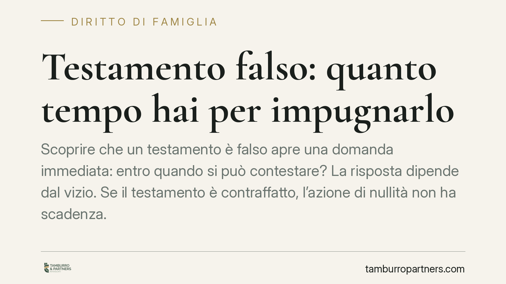

Testamento falso: quanto tempo hai per impugnarlo
Scoprire che un testamento è falso apre una domanda immediata: entro quando si può contestare? La risposta dipende dal vizio. Se il testamento è contraffatto, l'azione di nullità non ha scadenza. Se invece presenta solo difetti formali, il termine è di cinque anni. Distinguere i due casi è decisivo per non perdere ogni tutela.

Il fatto e perché conta
Un erede scopre che il testamento olografo — quello scritto, datato e firmato di pugno dal defunto (art. 602 c.c.) — non è stato redatto dal testatore, ma da un terzo. La firma è imitata, o l'intero documento è opera altrui. La prima preoccupazione, oltre alla ricostruzione dell'asse ereditario, riguarda i tempi: esiste un termine oltre il quale non si può più agire?
La questione non è teorica. Da come si qualifica il vizio dipende la sopravvivenza stessa del diritto di impugnare.
Inquadramento normativo
Il codice civile distingue due patologie del testamento: la nullità e l'annullabilità. Sono regimi diversi, con conseguenze diverse sui termini.
Quando il testamento olografo è falso — cioè materialmente formato o sottoscritto da persona diversa dal testatore — la giurisprudenza lo tratta come un atto radicalmente privo di autenticità. Si applica l'art. 606, primo comma, c.c., che sanziona con la nullità il testamento privo dell'autografia o della sottoscrizione. La nullità, secondo la regola generale dell'art. 1422 c.c., è imprescrittibile: l'azione può essere proposta senza limiti di tempo.
Diverso il caso dei vizi di forma non essenziali e degli altri difetti che l'art. 606, secondo comma, c.c. colpisce con la semplice annullabilità: qui il termine è di cinque anni, che decorrono dal giorno in cui è stata data esecuzione alle disposizioni testamentarie.
Sul punto la Corte di Cassazione, con le Sezioni Unite, ha chiarito un aspetto processuale rilevante: chi contesta l'autenticità di un testamento olografo non deve limitarsi a disconoscerlo, ma deve proporre domanda di accertamento della falsità, assumendo il relativo onere probatorio. In pratica, non basta negare: occorre agire e dimostrare.
Implicazioni pratiche
Per chi si trova a difendere la propria posizione di erede legittimo, la qualificazione del vizio cambia tutto.
Se il testamento è contraffatto, il tempo non gioca contro di voi: l'azione di nullità resta esperibile anche a distanza di molti anni. Questo protegge l'erede che scopre la falsità tardivamente, magari dopo che i beni sono già stati assegnati.
Se invece il difetto è meramente formale — e quindi rientra nell'annullabilità — il conteggio dei cinque anni parte dall'esecuzione delle disposizioni. Attendere significa rischiare la decadenza.
Attenzione anche all'aspetto probatorio. Sostenere che una scrittura sia falsa impone di dimostrarlo, di regola tramite perizia grafologica disposta dal giudice. La sola convinzione soggettiva non basta. Prima di avviare un giudizio conviene quindi raccogliere elementi concreti: scritture di comparazione autentiche, documenti coevi, testimonianze sulle condizioni del defunto.
Un ulteriore profilo riguarda i costi e i tempi del contenzioso. L'azione di falso è un giudizio complesso, che coinvolge consulenze tecniche e spesso più eredi con interessi contrapposti. Valutare la solidità della prova, prima ancora del termine, è la scelta più prudente.
Cosa fare in concreto
- Qualificate subito il vizio. Verificate se contestate la falsità (nullità, imprescrittibile) o un difetto formale (annullabilità, cinque anni dall'esecuzione). La strategia cambia radicalmente.
- Raccogliete le scritture di comparazione. Recuperate documenti autentici del defunto (lettere, contratti, firme certe) utili a una futura perizia grafologica.
- Non limitatevi a disconoscere. Se sospettate la contraffazione, preparatevi a proporre una domanda giudiziale di accertamento della falsità, sui cui gravi l'onere della prova.
- Controllate la decorrenza dei termini. Se il dubbio riguarda un vizio formale, individuate la data di esecuzione delle disposizioni per non superare il quinquennio.
- Consultate un legale prima di agire. Consigliamo una valutazione preliminare della solidità probatoria: un'azione avviata senza elementi adeguati espone a costi e a esiti sfavorevoli.
---
*Contributo informativo a cura di Tamburro & Partners - Avv. Giuseppe Tamburro. Non costituisce parere legale.*
Ogni famiglia ha il suo equilibrio.
Separazione, divorzio, affidamento, assegno: se vuoi un confronto riservato su una specifica situazione, scrivi allo studio. Ti rispondiamo entro un giorno lavorativo.